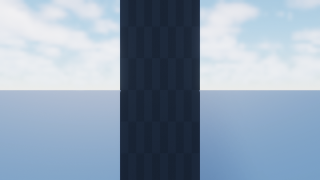
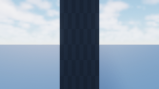
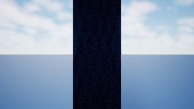
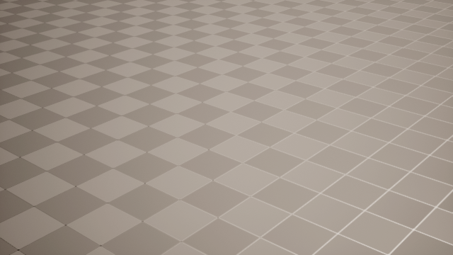
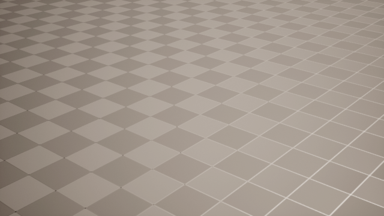

Frame the actor.
Keep the exceptions.
Save the result.
Native Unreal camera editing, an arrangement scoped to one actor, and explicit visibility choices that travel with the saved View.
This is a walkthrough of the implemented flow and its recorded automated results. The original design proposal explains the intent; the product contract owns current behavior. Plan status remains in the plan index.
Arrange once. Fine-tune where the scene lives.
The author starts with an actor selected in Unreal. The package creates one fitted camera and a durable draft; the attached native panel becomes the control surface for that arrangement. For precise framing, the author selects or pilots the transient camera and uses Unreal’s viewport and Details panel.
| Author’s need | Earlier demo limitation / motivation | Implemented flow |
|---|---|---|
| “This actor needs one view.” | Cardinal starting views were too prescriptive. | Start with one fitted camera. Add, duplicate, remove, rename, and reorder without rebuilding the set. |
| “I need many angles.” | A fixed demo arrangement did not express the desired coverage. | Propose a single, orbit, or arc layout with an explicit count. Review identity changes before applying. |
| “All these views need more space.” | Repeated manual edits made global intent tedious. | Tune distance, lens, height, elevation, yaw, aim, and margin at this arrangement’s scope. |
| “Except this carefully framed shot.” | Regeneration could lose one-off work. | Camera overrides and pinned manual placement survive retained identities. Clearing an override resumes inheritance. |
| “That column blocks this view.” | Heuristics could not express author intent reliably. | Select the column in Unreal; add it to this camera’s Hide list. Inspect effective lists and resolution diagnostics. |
| “Come back tomorrow, then capture unattended.” | Live interaction alone was not a durable deliverable. | Resume the draft for editing. Render the approved Review Set without the authoring plugins. |
The earlier-flow column summarizes the design motivation, not a measured performance baseline. No interaction-latency benchmark is claimed here.
-
Select the subject and attach its draft.
The panel identifies the actor, active camera, draft revision, and file destinations. Separate arrangements—even for the same actor—remain independent.
-
Choose coverage, then refine the arrangement.
Generate a starting layout, organize groups, and adjust shared defaults. Use checked cameras for a deliberate subset.
-
Select or pilot one camera in Unreal.
Transform editing pins its placement. Lens editing creates an independent FOV override. Native Undo/Redo participates in the editing flow.
-
Choose blockers and preview the authored view.
Unreal actor selection supplies Hide/Protect entries. Preview exclusions apply to the piloted viewport only.
-
Save views in the displayed scope.
Approval publishes immutable pose, effective visibility, and capture-profile snapshots. Draft autosave and capture approval are separate actions.
“The whole arrangement” means this actor’s set.
Scope is explicit: the attached arrangement, one named group, or checked cameras within it. There is no operation here that tunes every actor’s cameras. Shared settings flow from arrangement → group → camera, independently for each field.
Actor B · arrangement B
Its defaults, groups, cameras, and approved Views are unaffected by edits to arrangement A.
Three kinds of intentional exception
Field override: keep one camera at 40° while its siblings inherit 50°.
Pinned placement: keep the native Transform while generated siblings refit.
Visibility exception: hide a blocker only for the close-up; protect a required actor even when a broader scope hides it.
Try the inheritance rule
Interactive illustration, initialized from the recorded journey’s settings. This changes only the report; it does not communicate with Unreal. No camera fitting is simulated.
Changing the shared lens preserves A’s 40° override and pinned placement.
| Action | What changes | What the author should expect |
|---|---|---|
| Shared or group tuning | Inheriting fields; generated fitting | Manual placement remains pinned. FOV inheritance is separate from placement. |
| Inherit one field | Only that field’s local override | Other exceptions remain. Clearing lens inheritance does not unpin the camera. |
| Unpin | Placement returns to generated fitting | Use deliberately: the generated framing replaces the manual Transform. |
| Dolly / world-Z move | A deliberate movement of affected cameras | The affected placements become pinned rather than being silently refitted later. |
| Change layout / import recipe | A reviewed proposal of identity changes | Retained identities keep exceptions. Removing customized cameras requires acknowledgement; stale proposals must be recreated. |
A blocker disappears. The original view returns.
The native fixture creates a temporary opaque engine-cube column, then renders three passes with the same camera: visible, excluded by the shared visibility policy, and restored with that policy removed. Both backends go through the shared render-session implementation.
Original 320 × 180 PNGs, displayed larger for inspection. Drag each divider or use the focused slider’s arrow keys. These are renderer-path proofs, not an exposure-matched Pure/Authored review pair; background brightness can change between passes.
Viewport renderer

Visible referenceExcluded{kind=link}

{kind=link}
{kind=link}
SceneCapture renderer

Visible referenceExcluded
{kind=link}
{kind=link}
Source: out/camera-native-45-02/,
UEShed.Cameras.Rendering.ViewLocalVisibilityProof. Camera:
location (800, 0, 50000), yaw 180°, FOV 60°. Column: engine cube scaled (2,
2, 8), at (0, 0, 50000). The generic fixture establishes loaded, opaque,
non-Nanite static-mesh behavior; it does not establish the broader studio
geometry matrix.
The camera survives the authoring session.
{kind=link}

Recorded camera A
Position: X 950 · Y −750 · Z 650
Rotation:
pitch −25° · yaw 140° · roll ≈ 0°
Lens:
horizontal FOV 40° · 16:9
The journey expanded to a three-camera arc, then set shared FOV 50°, distance scale 1.4, and height offset 160. Camera A retained its manual placement and 40° exception.
It switched away and back, exported a recipe, approved three Views, detached, and restarted Unreal with authoring disabled before rendering the saved pose.
Protection wins—even across different actor locators.
The second comparison intentionally targets the subject itself: the Hide entry uses the floor’s GUID, while protection uses its actor path. Both resolve to the same actor, so the floor stays visible. Similar-looking outputs are the expected result here.


not_assessed, with no valid
image-space denominator. It does not certify successful subject coverage or
invent a visibility score.
Exact evidence excerpt: capture-only restart and assessment
{
"status": "passed",
"captureOnlyRestart": true,
"authoringCapabilityAbsent": true,
"mapPackageDirtyBefore": false,
"mapPackageDirtyAfter": false,
"subjectProjection": {
"code": "behind_camera",
"status": "unprojectable"
},
"visibility": { "status": "not_assessed" }
}
Selected fields combined from the journey’s
evidence.json and authored-capture.json; not a
complete wire response.
Bundled provenance and diagnostic excerpts
retain source paths and image hashes.
Hide blockers. Protect what matters.
The camera selection and the Unreal actor selection serve different purposes. Check cameras in the panel to choose where an edit applies; select world actors to choose what belongs in a visibility list. Selecting a blocker does not redefine the camera edit scope.
One column, one close-up
Select the close-up camera’s scope. Select the column in Unreal. Choose Hide selected actors in scope, inspect the resolved entry, then pilot the camera and enable authored preview.
Save that camera’s View when satisfied. Its effective visibility becomes a snapshot; sibling Views keep their own saved policies.
A common blocker, with one exception
Add a blocker to the arrangement’s Hide list. For the camera that must retain it, add the actor to Protect at that camera’s scope.
Shared, group, and camera lists compose. Protection wins across the effective lists, including GUID/path aliases resolving to the same live actor. The subject is protected automatically.
| Actor reference / geometry | Behavior | Author’s next step |
|---|---|---|
| Loaded opaque non-Nanite static mesh | Supported exclusion surface. | Inspect the effective list and preview, then approve. |
| Missing, unloaded, ambiguous reference | Explicit resolution diagnostic; draft may retain the entry. | Load or repair the intended reference. Native Save views validates authored references. |
| GUID no longer resolves | No fallback to a possibly reassigned actor path. | Resolve the identity deliberately; a familiar path is not sufficient proof. |
| Instanced mesh / foliage / Nanite / translucency | Outside the established supported surface. | Treat as unsupported; do not rely on this fixture as evidence of correct exclusion. |
| World Partition unloaded geometry | No silent promise of complete scene realization. | Prepare loading explicitly; broader loading coverage remains future verification. |
Preview affects the piloted viewport; SceneCapture has its own exclusion list. The flow does not toggle actors’ global editor visibility or serialize hidden flags into the map. This makes the authored capture policy an inspectable artifact rather than a side effect left in the scene.
Four files with different jobs.
The distinction matters when an author asks “did I save it?” Draft autosave preserves ongoing work. Save views publishes the reviewed capture definition. A recipe transfers framing intent to another actor. A visibility preset transfers an explicit actor list within its project/map.
| Artifact | Contains | Load / reuse semantics |
|---|---|---|
draft.jsonExact working setup |
Subject identity, arrangement settings, groups, cameras, overrides, pins, visibility lists, approved Review Set, and durable operation/recovery state. | Reattach to continue the same actor’s work. Mutations autosave atomically. The draft is not the capture approval boundary. |
approved.jsonCapture deliverable |
Review Set with saved world-fixed poses, effective authored visibility, authoring ownership IDs, and capture-profile snapshots. | Capture without authoring plugins. Later draft edits do not silently rewrite an approved View. Reapproval deliberately publishes a new revision. |
recipe.jsonPortable framing |
Shared settings, groups, field overrides, and actor-relative manual positions. | Import through a reviewed proposal with fresh camera/View IDs. Actor locators, culling lists, and saved View ownership are excluded. |
| Visibility preset JSON Map-specific list |
Version, identity, name, project/map scope, and a local Hide/Protect list exported from the arrangement, group, or one camera. | Export to a new immutable path. Explicit adoption replaces the chosen scoped list after project/map validation. Previously saved Views retain their snapshots. |
Delete a camera without losing history accidentally
Removing a draft camera does not silently delete its saved View. Retired saved Views remain listed. Removing those saved definitions requires the explicit approval checkbox at arrangement scope; it cannot reach another arrangement’s Views.
Know which machine owns the path
Draft, approved output, recipe, and preset paths refer to the host running the package. If Unreal runs on another machine, a path entered in its panel is still a Node-host destination.
What survives recipe export? Actual journey excerpt
{
"version": 1,
"name": "Studio starting arc",
"settings": {
"fieldOfViewDegrees": 50,
"distanceScale": 1.4,
"heightOffset": 160,
"margin": 0.1
},
"groups": [],
"cameras": [
{
"displayName": "Fixture camera",
"yawDegrees": 0,
"overrides": { "fieldOfViewDegrees": 40 },
"relativePose": { "…": "actor-relative manual pose retained" }
},
{ "displayName": "arc 2", "yawDegrees": 80, "overrides": {} },
{ "displayName": "arc 3", "yawDegrees": 160, "overrides": {} }
]
}Abbreviated for reading; the ellipsis is explanatory, not valid recipe input. The generic fixture’s subject origin is zero, so its relative position numerically matches the recorded world position. No real studio assets or paths are included.
When saving meets a disconnect or concurrent edit
Each mutation carries arrangement identity, expected revision, and operation ID. Stale revisions fail explicitly. The file store retains 256 operation outcomes, uses a cross-process writer lock, and records approval export intent together with the resulting Review Set. Retrying the same operation can repair an interrupted export without issuing another View revision.
If a camera moves again after Save but before the host observes the request, that Save is canceled so the author can review and save again. Pending native state is retained for explicit recovery when ownership is released; an old acknowledgement cannot silently overwrite a newer native gesture.
Pure and Authored answer different questions.
| Output choice | Artifact meaning | Assessment / exposure |
|---|---|---|
| Pure only | The scene without authored exclusions. | Natural-scene assessment belongs here when valid evidence permits it. |
| Authored only | The scene with the approved effective visibility policy. | No fabricated natural-scene visibility score. Viewer labels the artifact Authored. |
| Pure + Authored | Both variants with separately named artifact evidence. | SceneCapture requires fixed EV100. Viewport pairs may meter Pure once and hold exposure for Authored. |
| Legacy Clear | The pre-existing heuristic/isolation workflow. | Separate from explicit author-selected culling. Explicit authored output replaces the companion request for that View. |
Removing a bright wall can otherwise change automatic exposure and make the entire image look different. Shared exposure is part of the paired-output contract, not an incidental UI preference. The native panel exposes fixed EV100; library and CLI commands can set the full existing render policy. Approval creates a profile snapshot without mutating profiles used by other Views.
Map tiles use the same visibility policy
Map Capture accepts capture.visibility, resolves it
before metering and each batch, and keeps its deterministic
orthographic grid. Live map previews provision the same policy.
mapCaptureVisibilityVariants produces ordinary
Pure/Authored plans with fixed shared exposure for a pair. Each
returned plan publishes its own immutable run.
Explicit backend, explicit evidence
The renderer does not silently switch backends to produce an image. Authored evidence must match the saved policy and retain resolution diagnostics.
Review Set 1.5 carries authored output; Capture/Run 1.7 names the evidence. Map Capture 1.2 accepts visibility; live preview provisioning uses version 4.
The menu is replaceable. The package owns the workflow.
Durable draft coordinator
Versioned JSON events/state
Native events and state
Or a studio replacement
| Layer | Owns | Adoption choice |
|---|---|---|
@ue-shed/cameras |
Domain transformations, draft store ports, revision-scoped commands, panel session, reconciliation, approval. | Use from a library or CLI. A studio may provide another host or store. |
UEShedCameraAuthoring |
The reference Unreal menu and its controls. | Opt in; replace it with a studio menu using the public contracts. |
UEShedCameraAuthoringBridge |
Native selection, activation, pose/lens readback, events, visibility resolution, published panel state. | Opt in independently of the reference menu. Depends on Cameras. |
UEShedCameras + Core |
Shared rendering and editor ownership primitives. | Sufficient for approved camera capture; authoring plugins are not required. |
| Workbench | Showcase/review client; Authored output display. | No privileged domain ownership. Arrangement controls in Workbench are later work. |
Public integration surfaces include CameraPanelAction,
CameraPanelEvent, CameraPanelState, and
makeCameraAuthoringPanelSession. The host acknowledges durable
mutations; the bridge checks native sequences to prevent echo loops and
stale acknowledgements. A studio can adopt the menu, the bridge alone, or
the headless package as appropriate.
The durable coordinator in this implementation runs in the package host, typically Node. The C++ bridge owns native editor state. The separate sync-layer concept remains future work: neither TanStack DB nor a new generic distributed database is introduced by this change. Existing ports leave room to insert that layer later.
Start from an actor selected in Unreal.
Enable the optional authoring capability and its dependencies in your configured project. Open the map, select one subject actor, and use your Unreal RC endpoint. The commands below use a local example endpoint; change it to your configured address.
pnpm exec tsx scripts/ue-shed.ts review authoring arrangement from-selection draft.json --endpoint http://localhost:30010
pnpm exec tsx scripts/ue-shed.ts review authoring arrangement attach draft.json camera-1 --endpoint http://localhost:30010 --output approved.jsonKeep the attach command running; it reconciles at 200 ms intervals and reports state changes. Open Window → UE Shed Camera Authoring. Begin with the single fitted camera, then use the native controls to change coverage and refine the views.
-
Set the scope before entering values.
For “zoom this actor’s set out a little,” choose the arrangement and increase distance scale. For a subset, use a group or checked cameras.
-
Make one deliberate manual exception.
Pilot a camera and frame it in Unreal. Confirm that its pose is pinned, and inspect lens overrides separately.
-
Review exclusions with the intended output mode.
Select blockers in the world, choose Hide or Protect at the desired scope, inspect diagnostics, and enable authored preview. For a SceneCapture pair, set fixed EV100.
-
Approve the scope you actually reviewed.
Choose Save views in current scope. Confirm synchronization and the approved destination before detaching.
-
Resume or capture.
Reattach the draft to edit again, or use the approved Review Set with the existing Review capture commands. Detach the authoring lease before batch capture.
# Inspect the durable draft after restarting the host.
pnpm exec tsx scripts/ue-shed.ts review authoring arrangement show draft.jsonThe product guide documents lower-level create/patch/approve/bridge commands and recovery paths. Authoring currently supports perspective cameras with the existing 16:9 approved-pose contract; additional projections and aspect contracts are later work.
Concrete evidence, bounded claims.
| Check | Recorded result | Evidence / limit |
|---|---|---|
Full local pnpm check |
Passed; final test summary: 1,183 passed, 48 skipped. |
out/camera-45-final-check.log. Local gate, not
a hosted CI claim. Environment-gated tests remain skipped.
|
| Final focused checks | 12 tests across 3 files passed; precommit gate passed. |
out/camera-45-final-focused.log and
out/camera-45-precommit.log, after the final
capture-profile identity edge fix.
|
| Native build and automation | 9 plugins built; 10 native tests passed. Final native compile succeeded. |
out/camera-native-45-02-run.log and
out/camera-45-native-build.log. Unreal 5.7 on
Windows.
|
| Actor exclusion / restoration | Actual images through both shared render backends; unchanged map dirt and actor editor-visibility flags. | Six bundled PNGs from the opaque-column proof. No broad geometry claim. |
| Authoring → saved Views → capture-only restart | Passed: native pose and lens, scoped arc tuning, saved exceptions, recipe export, approval, and capture. |
out/camera-journey-45-05-run.log. Exact framing
persistence; subject coverage was not validly assessable.
|
| Native panel visual polish | Implemented controls; no native-menu screenshot or visual regression baseline in this report. | The automation exercises the underlying journey. It does not certify discoverability, layout at every size, or interaction latency. |
An earlier concurrent gate attempt had two CLI timeouts. The isolated CLI tests and a clean full rerun passed. The full gate preceded a final narrow profile-identity fix, which received focused tests and the precommit gate. This report’s new documentation checks are separate from those implementation results.
What to review in the next iteration
Authoring usability
Observe real authors choosing scope, noticing pins and inherited values, distinguishing draft autosave from approval, and repairing unresolved actors. Validate the native panel visually at practical window sizes and with large camera lists.
Measure interaction and reconciliation behavior under latency; the 200 ms host schedule is not an end-to-end responsiveness guarantee.
Production recovery and geometry
Complete the step 6 matrix: concurrent changes, disconnects, recovery ergonomics, large arrangements, and performance under real scene complexity.
Expand only from explicit evidence for Nanite, instancing/foliage, translucency, and World Partition loading. The present static-mesh proof is intentionally narrower.
Source map, reproduction, and screenshot provenance
- Camera arrangement authoring — behavior, CLI, persistence, and adoption ports.
- Shared camera rendering, Map Review, and Map Capture — downstream contracts.
- Native proof guide — test and fixture context.
- Automated journey script and native visibility proof source.
- Bundled image manifest — original artifact paths, SHA-256 hashes, measurement units, and diagnostic excerpts. PNG bytes were copied unchanged.
# Configure UE_SHED_UNREAL_ENGINE_ROOT using your discovered engine install.
# Use a new output directory for each run.
pnpm test:unreal-plugins out/camera-native-new
pnpm exec tsx scripts/test-camera-authoring.ts out/camera-journey-new
The source out/ directories are local generated evidence
and are not committed. This report bundles selected screenshots and a
provenance manifest so the comparisons survive cleanup. The neighboring
media/camera-flow/ folder must travel with this HTML when
sharing it. No external fonts, scripts, or network resources are needed.